Laser-cut ribs, carbon-capped spar, sheeted D-box and printed PETG servo mounts. This page is the complete build tutorial: video, Indian bill of materials with shop links, what to ask for in local shops, and every file you need.
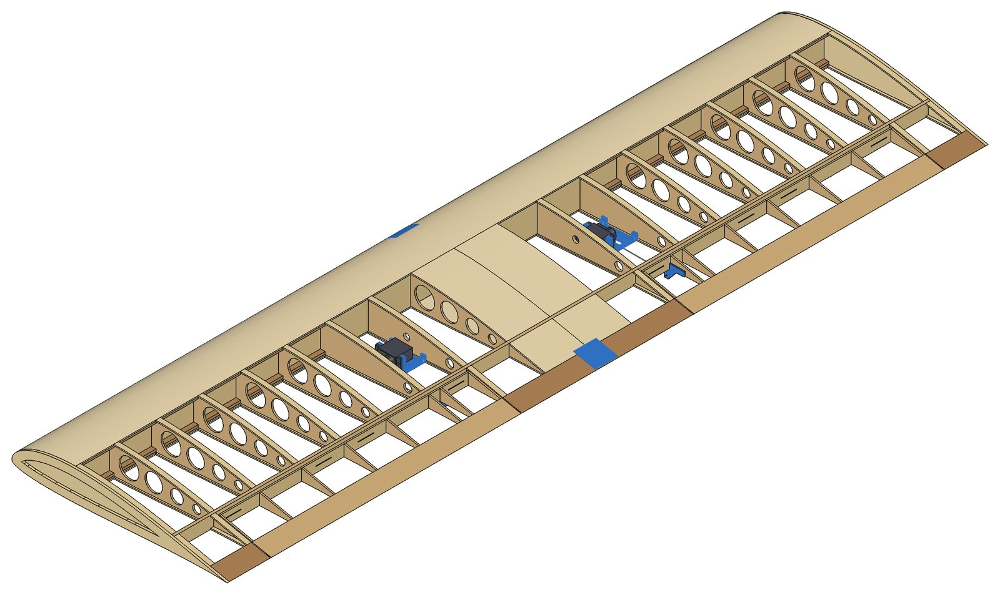
Chapters: intro 0:00 · wing overview 0:32 · materials 0:55 · tools 1:19 · weighing balsa 1:35 · laser cutting 1:55 · strip stock 2:17 · glues 2:34 · steps 1–8 3:00 · covering 5:13 · servos 5:31 · checks and links 6:04
Score = water mass ÷ empty mass, so every gram counts — but the same aircraft must survive every flight and hand launch. The wing is a classic built-up balsa structure, sized and checked in FreeCAD with re-runnable scripts.
| Item | Value |
|---|---|
| Span / chord / area | 990 mm / 280 mm / 0.277 m² |
| Airfoil | SD7062 (14 %), gentle stall, low drag |
| Dihedral / position | 0°, high wing, rubber-band mount |
| Spar | 3 × 6 hard balsa + 0.5 × 6 carbon caps, 1.5 mm webs; margin ≈ 4 at n = 6 |
| Torsion | 1.5 mm D-box sheeting to 29 % chord |
| Ailerons | 70 × 325 mm, CA hinges, MG90S on its side |
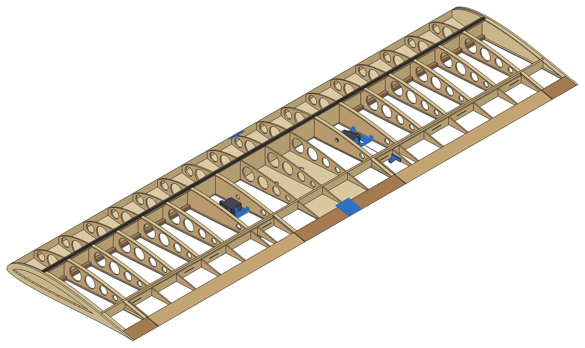
Lower drag at loaded cruise and after the drop than high-lift sections (E423, S1223), small pitching moment. D-001
137–157 g against ≈ 176 g LW-PLA and ≈ 208 g foam. Repairable at the venue. D-003
One flat piece, continuous spar and sheeting, no joiner. The high wing gives some effective dihedral. D-012
Bigger lightening holes, lighter grades where loads are low, ring tip caps: 172 g → 157 g. D-013
Full reasoning, numbers and every decision: design report and decision record.
| Item | Buy online | Qty | Unit ₹ | What to ask for | Where offline |
|---|---|---|---|---|---|
| Balsa | |||||
| Balsa sheet 1.5 mm 100 × 1000 mm, straight grain | RC Hyderabad ↗Amazon.in search ↗ | 8 | ₹250 | “1.5 mm balsa sheet, 100 × 1000, light grade.” Weigh each sheet: light ≈ 13–15 g, medium ≈ 18–21 g. You need 3 light sheets (D-box + centre sheeting), 2 light (cap strips, tip ribs), 2 medium (shear webs), 1 spare. | Aeromodelling / hobby shops; architecture-model suppliers near engineering and architecture colleges. RC Hyderabad also has store pickup. |
| Balsa sheet 2 mm 100 × 1000 mm, medium | RC Hyderabad ↗Amazon.in (Vortex-RC 2 mm, 5-pack) ↗ | 4 | ₹230 | “2 mm balsa sheet, medium grade, for laser-cut ribs.” Medium ≈ 22–30 g per sheet. 3 sheets for the ribs, 1 spare. | Same as above. Ask the shop to choose sheets of the same weight. |
| Balsa sheet 3 mm 100 × 1000 mm | RC Hyderabad ↗Amazon.in (Vortex-RC 3 mm, 5-pack) ↗ | 4 | ₹293 | 1 hard sheet (≥ 48 g) for the spar caps and aileron LE, 1 medium (rib 110, false spar pieces), 1 light (≤ 30 g, tip caps), 1 spare. | Hobby shops. Pick the hard sheet by weight and by feel (it dents less under a fingernail). |
| Balsa sheet 6 mm 100 × 1000 mm | RC Hyderabad ↗ | 1 | ₹390 | “6 mm balsa sheet, medium.” Cut the 6 × 17 mm leading edge and the 25 mm trailing-edge stock from it. | Hobby shops. Ready-made “trailing edge stock” also works if you can find it. |
| Spar | |||||
| Pultruded carbon strip 3 × 0.5 × 1000 mm | ElectronicsComp ↗ThinkRobotics ↗ | 4 | ₹342 | “Pultruded (unidirectional) carbon strip 0.5 × 3 mm, 1 metre” — not woven sheet. Two strips side by side make each 0.5 × 6 mm spar cap. A 0.5 × 6 mm strip is also fine if you find one. | Drone / RC shops in electronics markets such as Ritchie Street (Chennai), SP Road (Bengaluru), Lamington Road (Mumbai) or Lajpat Rai Market (Delhi) sometimes stock carbon rods and strips; phone first. |
| Covering | |||||
| Iron-on covering film 3 m roll, white or yellow | RC Hyderabad (white) ↗RC Hyderabad (cub yellow) ↗ | 1 | ₹1200 | “Iron-on heat-shrink covering film for RC planes (Monokote / Oracover type), 3 m.” Light colours stay cooler in the sun. Do not use vinyl wrap or self-adhesive film: they are much heavier. | RC hobby shops only (not stationery shops). |
| Covering iron sealing iron or small dry iron | RC Hyderabad (110 V — needs a step-down transformer) ↗ | 1 | ₹2400 | A 110 V sealing iron needs a 230 → 110 V step-down transformer in India. Cheaper option: a small household dry iron (no steam) with a thin cotton sock; set it low and test on scrap. | Any electrical shop sells dry irons. |
| Heat gun 2000 W, two settings | Amazon.in (AGARO 2000 W) ↗Amazon.in (Buildskill 2000 W) ↗ | 1 | ₹1299 | “Hot air gun, 2000 W, two temperature settings.” Use the low setting to shrink the film. | Hardware and power-tool shops. |
| Controls | |||||
| CA hinges 20 mm wide (26 × 20 × 0.5 mm) | RC Hyderabad ↗ | 12 | ₹10 | “CA hinges / flat fibre hinges, 20 mm wide.” 8 needed + 4 spare. Trim to 18 mm long, or cut the slots 13 mm deep on each side. | RC hobby shops. Pinned nylon hinges also work but need different slots. |
| Steel pushrod 1.2 mm 1.2 × 260 mm | RC Hyderabad ↗ | 2 | ₹60 | “1.2 mm steel pushrod” or “18 SWG spring-steel (piano) wire”. Bend Z-bends at both ends with flat-nose pliers. | Hardware shops: ask for 18 SWG spring-steel wire (1.22 mm). Do not use soft binding wire. |
| Servo MG90S metal gear, 180° | Robu.in ↗Flyrobo ↗ | 2 | ₹243 | “MG90S metal-gear 9 g servo, 180° (standard) — NOT the 360° continuous-rotation version.” Check the label before you leave the shop. | Robotics and RC shops in electronics markets such as Ritchie Street (Chennai), SP Road (Bengaluru), Lamington Road (Mumbai) or Lajpat Rai Market (Delhi). |
| Servo extension lead 30 cm, JR/Futaba | Amazon.in (SafeConnect 30 cm) ↗Amazon.in (pack of 10) ↗ | 2 | ₹259 | “30 cm servo extension, male–female, 22 AWG.” | Robotics / RC shops. |
| Screws M2 × 4 pan head, self-tapping | Amazon.in search ↗ | 8 | varies | “M2 × 4 mm self-tapping screws, pan / Phillips head” (often sold for laptops and toys). Buy 20; they get lost. | Screw and fastener sellers in electronics markets such as Ritchie Street (Chennai), SP Road (Bengaluru), Lamington Road (Mumbai) or Lajpat Rai Market (Delhi), or mobile/laptop repair shops; about ₹1–2 each. |
| Printing | |||||
| PETG filament 1.75 mm, 1 kg | Amazon.in (Polymaker PolyLite PETG) ↗ | 1 | ₹1399 | “PETG 1.75 mm” — not PLA: PLA softens in the Chennai sun. The wing uses only about 30 g. | 3D-printing shops and college maker spaces will print the 8 STL files for you. |
| Glues | |||||
| Thin CA (cyanoacrylate) low viscosity, 20 g | Amazon.in (Loctite 406) ↗ | 1 | ₹398 | “Thin / low-viscosity instant glue.” Fevikwik (medium) is fine for tacking but wicks less into joints. | Fevikwik: any stationery or hardware shop. Thin CA: hardware shops that sell Loctite. |
| PVA wood glue Fevicol SH, 100–250 g | Amazon.in search ↗ | 1 | varies | “Fevicol SH.” Thin it slightly with water for sheeting. | Any hardware, stationery or plywood shop. |
| Epoxy 2-part, slow (Araldite Standard) + 5-minute | Amazon.in search ↗ | 1 | varies | “Araldite Standard” (slow, strong) for carbon to balsa; any 5-minute epoxy for horns and frames. | Hardware and paint shops. |
| Tools | |||||
| Hobby knife + No. 11 blades | Amazon.in (Olfa) ↗ | 1 | ₹623 | “Precision knife with spare blades.” Change blades often: balsa crushes under a dull blade. | Stationery and art shops. |
| T-pins box | Amazon.in (GripPro T-pins) ↗ | 1 | ₹253 | “Steel T-pins” (dressmaker or map pins also work). | Tailoring-supply and stationery shops. |
| Self-healing cutting mat A3 | Amazon.in (VERAT A3) ↗ | 1 | ₹399 | “A3 cutting mat.” | Art and stationery shops. |
| Sandpaper 150/220/320 plus a long sanding block | Amazon.in ↗ | 1 | ₹199 | “Emery paper 150, 220, 320 grit.” Glue a sheet to a 300 mm flat aluminium bar or wood block. | Hardware and paint shops. |
| Building board flat 12 mm MDF/ply, 1200 × 400 mm + pin board | — | 1 | varies | “12 mm MDF cut to 1200 × 400, check it is flat” and a sheet of soft board (ceiling / notice-board material) to pin into. | Plywood and hardware shops (they cut to size). |
| Scale 0.01–0.1 g pocket / jewellery scale | Amazon.in search ↗ | 1 | varies | “Pocket jewellery scale, 0.01 g, 200 g.” | Electronics markets. |
| Steel rule 1 m, set square, clamps, masking tape | — | 1 | varies | — | Stationery and hardware shops. |
| Sheet 100 × 1000 | Volume | Light 90 kg/m³ | Medium 130 kg/m³ |
|---|---|---|---|
| 1.5 mm | 150 cm³ | ≤ 13.5 g | ≈ 19.5 g |
| 2 mm | 200 cm³ | ≤ 18.0 g | ≈ 26.0 g |
| 3 mm | 300 cm³ | ≤ 27.0 g | ≈ 39.0 g |
| 6 mm | 600 cm³ | ≤ 54.0 g | ≈ 78.0 g |
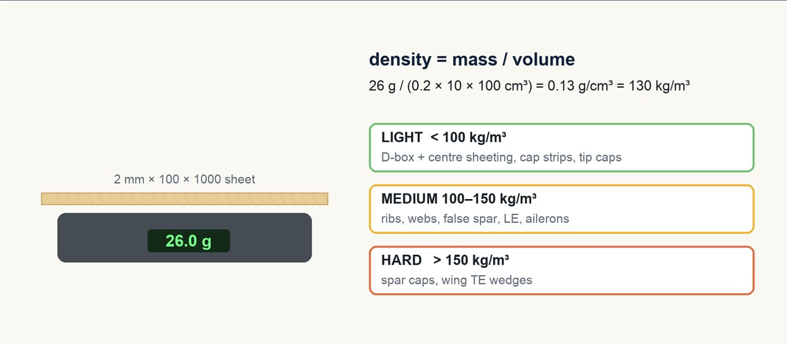
Laser cutter (we plan a Bambu H2D laser module, work area ≈ 310 × 270 mm) or a sharp knife with No. 11 blades; self-healing mat; 1 m steel rule.
Flat 1.2 m board, T-pins, set square, clothes pegs, masking tape, weights.
Long sanding block (≥ 300 mm), 150/220/320 grit, razor plane optional.
Sealing iron (or small dry iron with a sock) and a heat gun.
0.01–0.1 g scale, vernier caliper, throw gauge (a ruler and a protractor work).
Fresh air for CA and epoxy, eye protection, CA debonder, gloves for epoxy, a fire extinguisher next to the laser — never leave it running alone.
CUT. Layer LABEL has part names (do not cut), layer SHEET is the sheet outline (check the scale = 300 × 100 mm on import).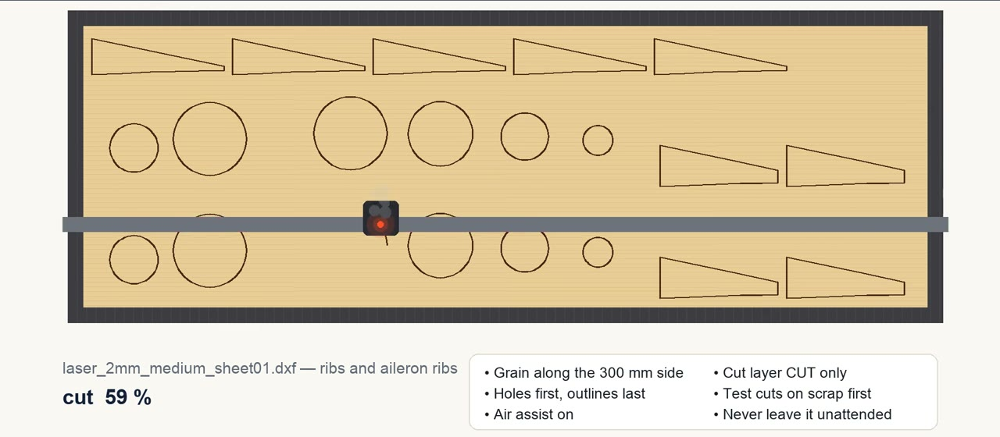
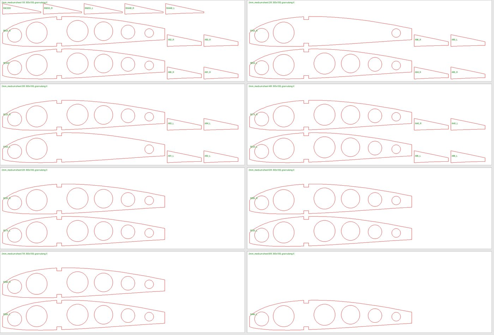
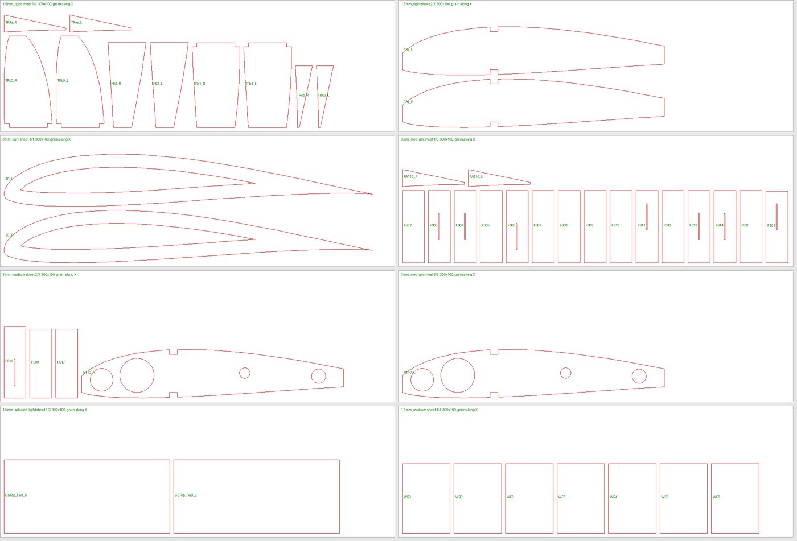
Spar caps 3 × 6 × 984 (hard), LE 6 × 17 × 984, TE stock 25 × 4.6 (wing 330 mm, ailerons 2 × 325), aileron LE 3 × 15.5 × 325, D-box sheets 78 and 74 mm wide × 984, cap strips 1.5 × 6 (32 × 126 mm, 12 × 48 mm). Every length is in the cut list.
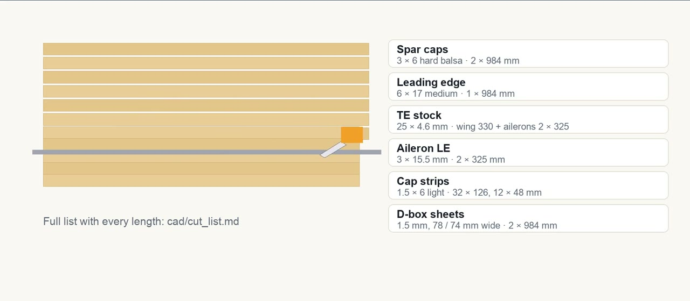
| Glue | Set time | Use for | Notes |
|---|---|---|---|
| Thin CA | Seconds | Rib to spar caps, cap strips, aileron parts, CA hinges (wick in). | Tight joints only; does not fill gaps. Keep debonder near; eye protection. |
| PVA (Fevicol SH) | 30–60 min to handle | Sheeting, tip-rib laminate, edge-joining sheets, LE stock. | Gives time to adjust; sands easily; light. Pin or tape while it sets. |
| Epoxy (Araldite) | 5 min – 24 h | Carbon to balsa, PETG frames, horns, rub plates. | Mix 1:1 by volume, thin layer, wipe the excess: epoxy is heavy. |
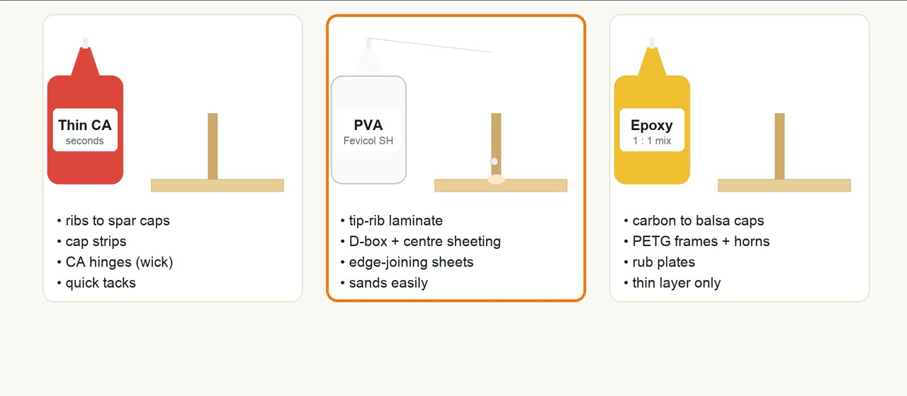
GLUEEpoxy (Araldite Standard), thin layer
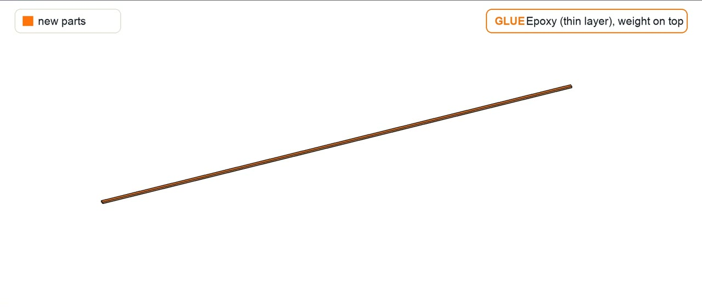
GLUEThin CA at each joint
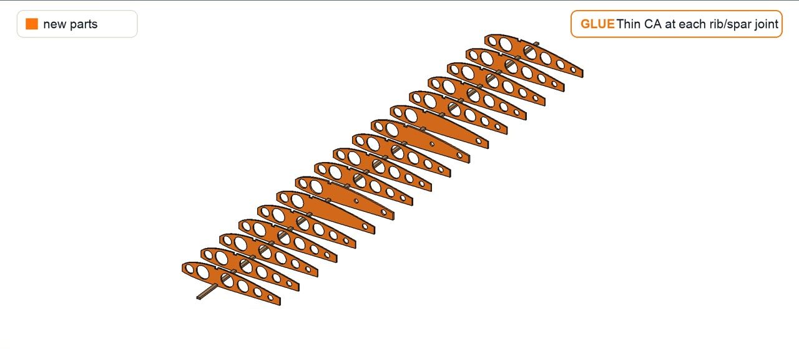
GLUECA or PVA; pins on both sides
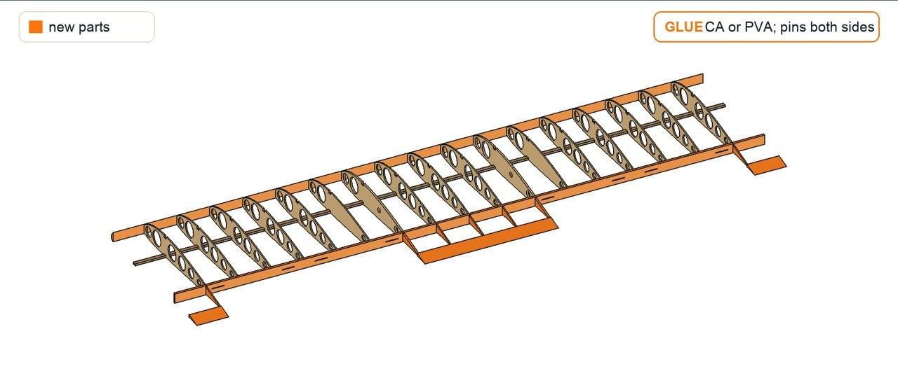
GLUECA; vertical grain
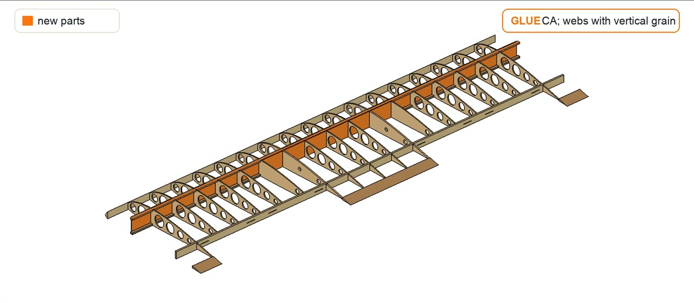
GLUEPVA on the ribs; CA tacks at the edges
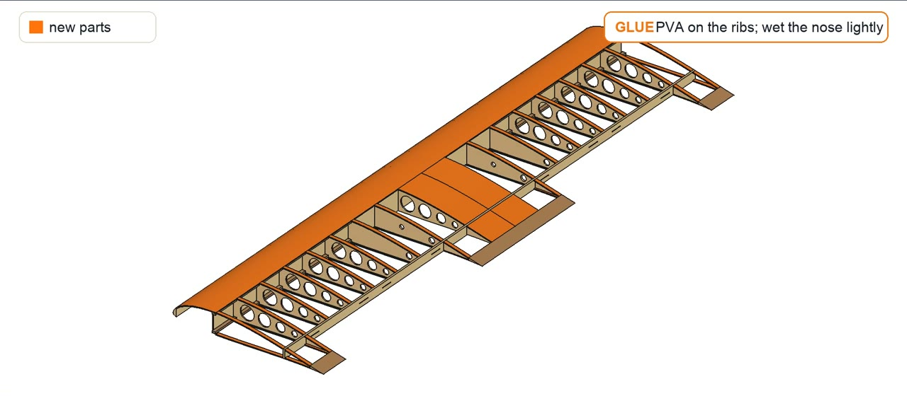
GLUEPVA sheeting; epoxy for the PETG frames
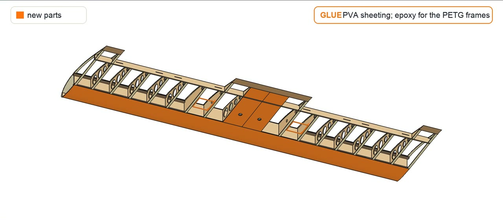
GLUEPVA laminate, grain crossed
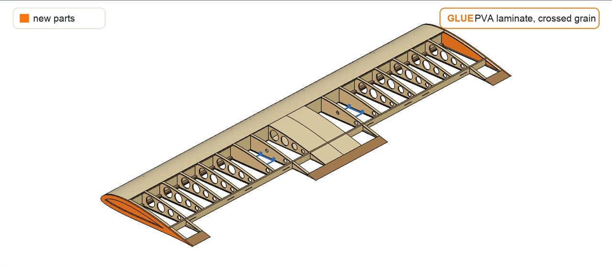
GLUECA; V-bevel 1.5 mm each side
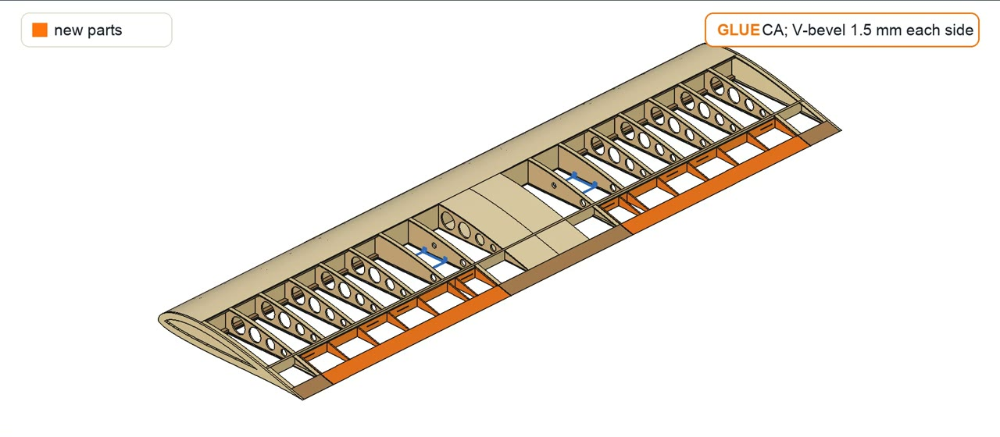
GLUEThin CA hinges; epoxy horns; M2 × 4 screws
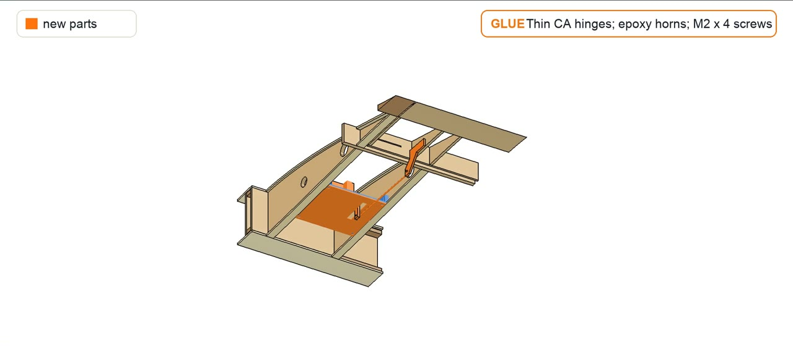
GLUEEpoxy rub plates
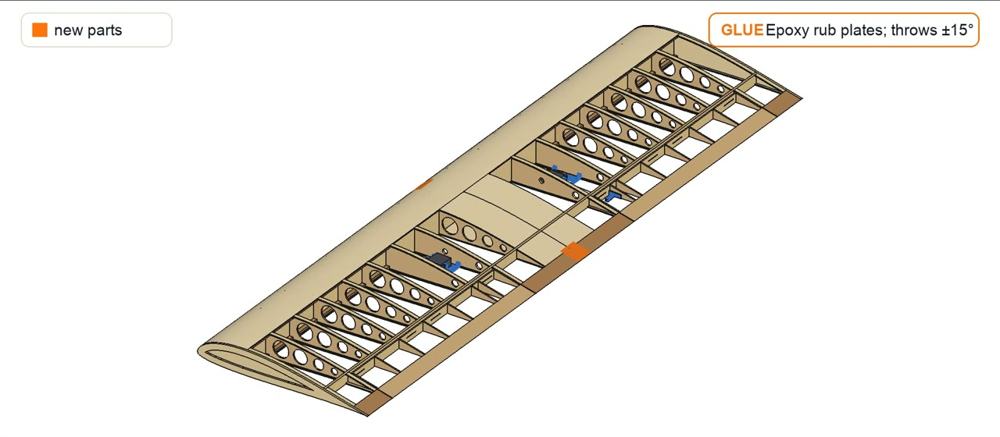
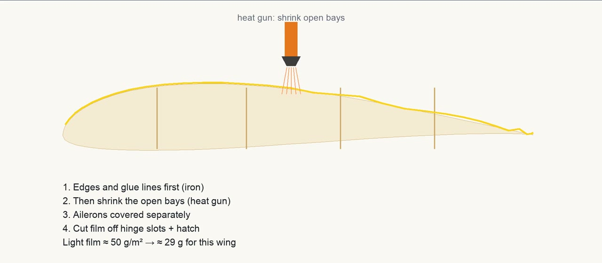
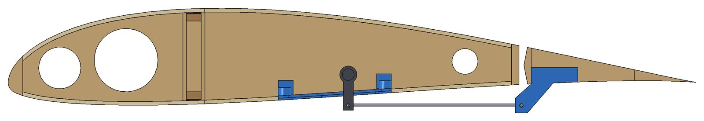
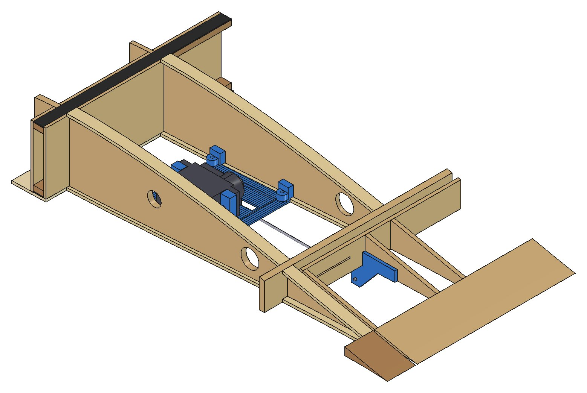
| Check | Result | Required | |
|---|---|---|---|
| Span | 990.00 mm | ≤ 1000 mm (rule) | ✔ |
| Chord | 280.0 mm | 280 mm | ✔ |
| Airfoil depth at the spar (x = 75.6) | 39.20 mm | 39.1 mm (plan) | ✔ |
| Overlapping parts (> 1 mm³) | 0 of 276 neighbour pairs | 0 | ✔ |
| Servo clearance to structure | ≥ 1.00 mm (arm ±35°) | ≥ 1 mm | ✔ |
| Aileron at ±20° | no contact, 0.74 mm gap | no contact | ✔ |
| Aileron length / end gaps | 325.00 / 1.00 mm | 325 / 1 mm | ✔ |
| Mass without servos | 156.6 g | ≤ 160 g | ✔ |
| Mass with 2 × MG90S | 184.0 g | — | ✔ |
| Mass group | Mass |
|---|---|
| Leading edge | 8.5 g |
| Sheeting (D-box + centre) | 25.5 g |
| Spar caps (balsa + carbon) | 14.8 g |
| False spar | 6.2 g |
| Ribs (incl. tip ribs) | 22.7 g |
| Tip caps | 2.8 g |
| Shear webs | 8.9 g |
| Cap strips | 4.2 g |
| TE wedges | 2.7 g |
| Ailerons | 8.7 g |
| Printed PETG parts | 11.2 g |
| Pushrods, screws, hinges | 3.3 g |
| Film covering | 29.2 g |
| Glue (estimate) | 8.0 g |
| Wing without servos | 156.6 g |
Volume × density from the CAD model. Film and glue ± 5 g, balsa ± 20 % between sheets: weigh your parts.